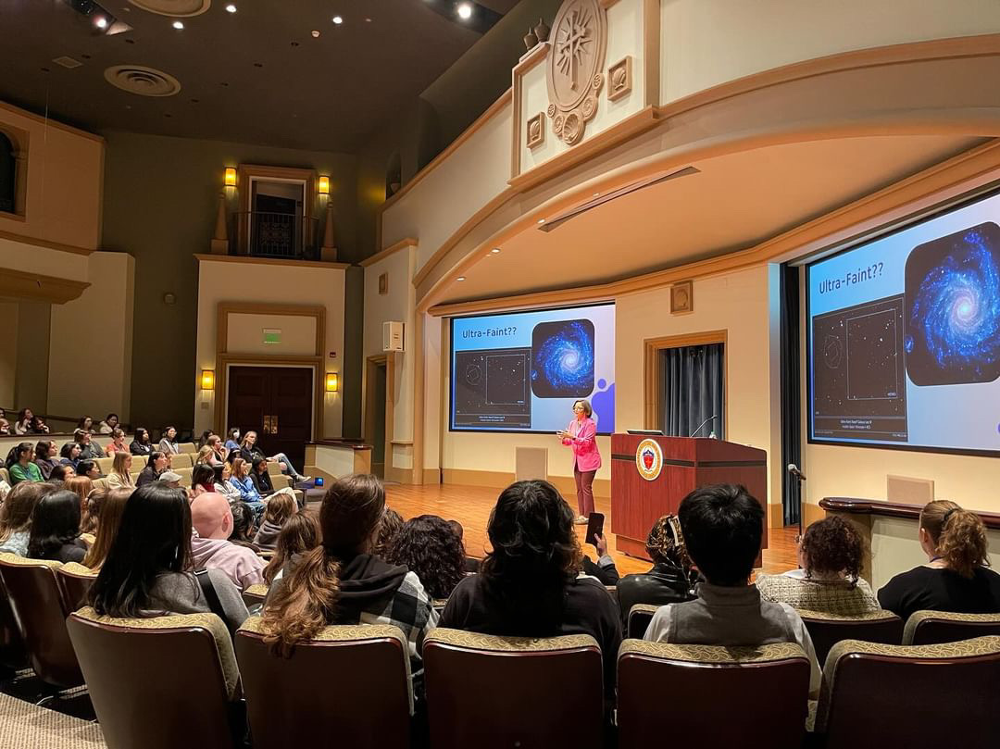
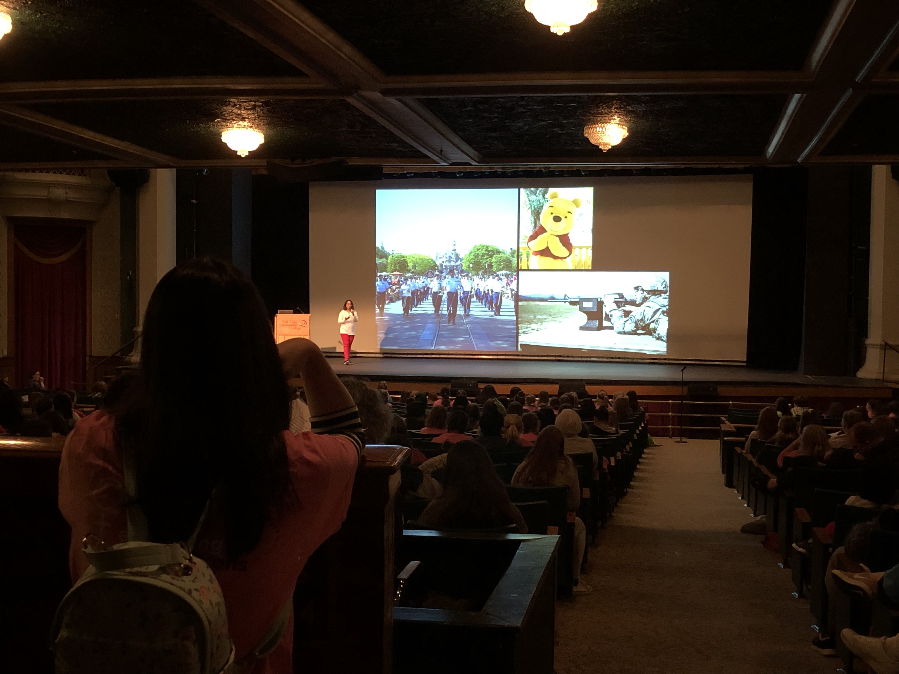

Speaking Events


I am a dynamic public speaker and science communicator bringing energy, clarity, and inclusivity to every stage. Whether discussing the mysteries of near-field cosmology or sharing my unconventional journey toward science, I connect deeply with audiences — educating, inspiring, and sparking curiosity in astronomy enthusiasts of all ages. I've been an invited speaker at major scientific meetings, like the American Astronomical Society, and community venues, including The Santa Barbara Museum of Natural History and California State University's STEM-NET’s Virtual Research Café. I've written for Mercury Magazine, created science communication shorts for AstronoMouse on YouTube, shared my journey to STEM with The Story Collider, and have been a featured alumni in Road to Science Happiness and The Reionization of Katy Rodriguez Wimberly.
I would love to speak at your next event! I bring astrophysical expertise, a vibrant life story, and an unshakable commitment to equity and education. Whether in lecture halls or community spaces, I makes science personal, powerful — and undeniably fun. Let's chat about your upcoming event — reach me via email at mwimberly [at] csusb [dot] edu.